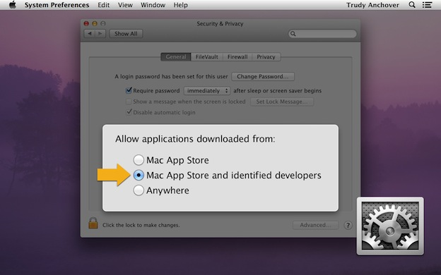
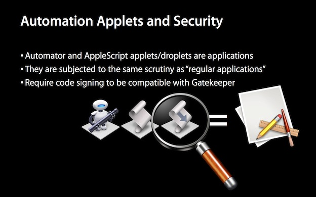

Code Signing support has been added as an export feature to both the AppleScript Editor and Automator applications, enabling Apple developers to easily generate signed copies of their applets and droplets.
GateKeeper and Security
Gatekeeper is a feature in Mountain Lion and OS X Lion v10.7.5 that builds on OS X’s existing malware checks to help protect your Mac from malware and misbehaving apps downloaded from the Internet.
NOTE: GateKeeper has no effect upon the launching of applets and droplets you create yourself and use on your computer. The restrictions applied by GateKeeper only target applications, applets, and droplets, downloaded to your computer, or received as attachments to email messages.
By default, the security settings on your computer are set to only allow the launching of applications (and applets and droplets) that have been downloaded from the Mac App Store, or are created by developers identified to Apple. (⬇ see below)

Automation applets code signed with an Apple Developer ID, will not trigger GateKeeper security warnings on computers that are using the default Gatekeeper security setting.

Code Signing of Automation applets is a boon for developers of automation-supporting Mac applications, and solution-providers, allowing them to distribute smooth-launching automation solutions to their customers and clients.